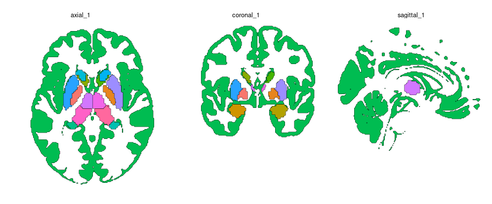
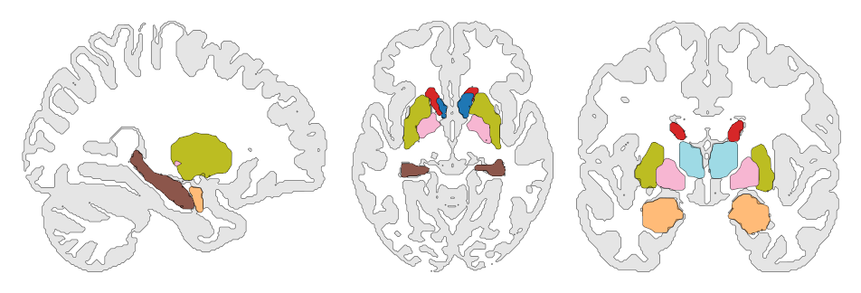

Building volumetric atlases
building-volume-atlases.Rmdbuild_atlas_vol() combines a discrete-label atlas with a
thresholded gray matter or anatomical context image and converts
selected slices directly into sf polygons. This workflow is
entirely in R and does not use hull reconstruction (which we do to
create the polygons from the surface meshes).
The atlas and context image must have identical dimensions and voxel-to-world transformations.
Build the midline views
melbourne <- download_volume_atlas("Melbourne_S1")
atlas <- build_atlas_vol(
atlas_path = melbourne$nifti,
lookup_path = melbourne$lookup
)
ggplot(atlas) +
geom_sf(aes(fill = region), show.legend = FALSE, colour = "black", linewidth = 0.15) +
facet_wrap(~view) +
theme_void()
By default, ggbrat chooses the planes nearest world coordinate zero for the axial, sagittal, and coronal axes. Choose coordinates explicitly when you already know the slices:
atlas <- build_atlas_vol(
atlas_path = melbourne$nifti,
lookup_path = melbourne$lookup,
views = c("axial", "coronal"),
slice_coordinates = c(axial = 12, coronal = -18)
)Choose slices interactively
If finding the correct coordinates by hand sounds joyless, use the Shiny slice selector:
atlas <- build_atlas_vol(
atlas_path = melbourne$nifti,
lookup_path = melbourne$lookup,
interactive = TRUE,
n_views = 4
)Switch between anatomical axes, scroll through the volume, and click
Use this view until all requested views are saved. The
result records axis, axis-specific int_view,
and a combined view such as "axial_2".

The interactive selector uses the suggested shiny
package:
install.packages("shiny")Control the gray-matter context
When gray_matter_path = NULL, ggbrat resolves the
standard gray-matter probability map from its resource cache. It is
thresholded at 0.5 by default.
atlas <- build_atlas_vol(
atlas_path = melbourne$nifti,
lookup_path = melbourne$lookup,
gray_matter_threshold = 0.6,
gray_matter_region = NA_character_
)Use gray_matter_region = NA_character_ when the context
should not be treated as an atlas region. Set
include_gray_matter = FALSE to omit it entirely.
Smooth the two kinds of outline separately
Atlas regions and the broad gray-matter outline rarely want the same amount of smoothing. Control them independently:
atlas <- build_atlas_vol(
atlas_path = melbourne$nifti,
lookup_path = melbourne$lookup,
smooth_iterations = 2,
gray_matter_smooth_iterations = 0.5
)These controls use geometric buffers and simplification, so they round stair-step boundaries without multiplying the number of vertices on every iteration. Fractional values are supported. Start small: too much smoothing can erase narrow structures.
